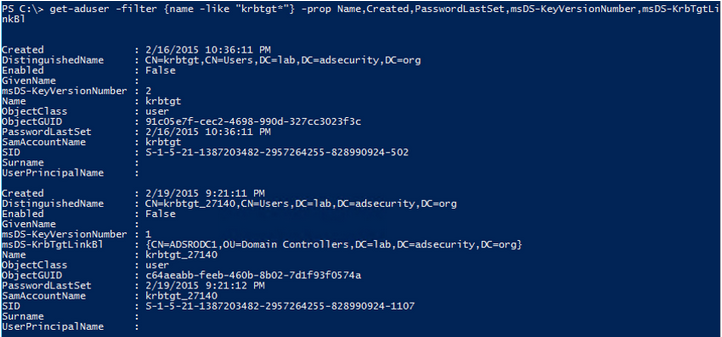

Kerberos Service Accounts
Every Active Directory domain has a domain Kerberos service account called KRBTGT which is used to sign all Kerberos tickets and encrypt all Kerberos authentication tickets (TGT). Since the KRBTGT account password hash is used to sign/encrypt Kerberos tickets for the domain, if an attacker gains knowledge of the KRBTGT password hash (Domain Controller access, DC backup access, etc) can result in them creating Golden Tickets to spoof access to anything in the AD forest. It’s important to ensure that the KRBTGT password is changed regularly (2x every year).
Every RODC has its own specific KRBTGT account which is specific to that RODC & is cryptographically isolated from the domain KRBTGT account. The RODC Kerberos account follows the naming format “KRBTGT_######” and includes a BackLink attribute (msds-KrbTgtLinkBl) linking the account to its RODC.
In the graphic below, there are two krbtgt accounts, the standard domain one (krbtgt) and one that belongs to a RODC (krbtgt_27140). The msds-KrbTgtLinkBl attribute links the RODC Krbtgt account to the RODC associated with it. The krbtgt_27140 account is linked to the RODC “ADSRODC1”. Each RODC has its own krbtgt account to create and sign Kerberos tickets which ensures that the loss of a RODC doesn’t compromise the entire domain.

I like to include the msDS-KeyVersionNumber attribute since it tracks password changes: the domain KRBTGT account usually starts at 2 and the RODC KRBTGT account usually starts at 1 for a new domain.
Discovering RODCs is pretty easy. We can query for all “krbtgt” accounts in AD or simply ask for all computer accounts with attributes unique to RODCs (msDS-Reveal-OnDemandGroup, msDS-NeverRevealGroup, msDS-RevealedList, msDS-AuthenticatedToAccountList – described further down in the post).
Searching for computers with the PrimaryGroupID set to ‘521’ will return domain RODCs (or search for DCs with “IsReadOnly” set to True) which effectively identifies them being in the group “Read-only Domain Controllers’.

Kerberos delegation enables a designated computer or user account to impersonate a domain user. Given the power these accounts have, it’s critical to limit this ability only to systems that require it. There are two different types of Kerberos Delegation, unconstrained and constrained.
Unconstrained Delegation was a feature that shipped with Active Directory during initial release and enables account impersonation to any Kerberos resource.
Constrained Delegation is a more secure Kerberos delegation option than Unconstrained Delegation first available with Windows Server 2003. This configuration limits user Kerberos impersonation to specific services on specific servers. Accounts configured with Constrained Delegation with Protocol Transition can request Active Directory Kerberos service tickets (TGS) on behalf of the user without proof of prior user authentication.
RODCs also have the attribute ‘TrustedToAuthForDelegation’ set to True which means RODCs are configured to allow Kerberos Constrained Delegation with Protocol Transition.

DCs are configured to allow Kerberos Unconstrained Delegation.
We can also query for all Domain Controllers that are flagged as “IsReadOnly”.